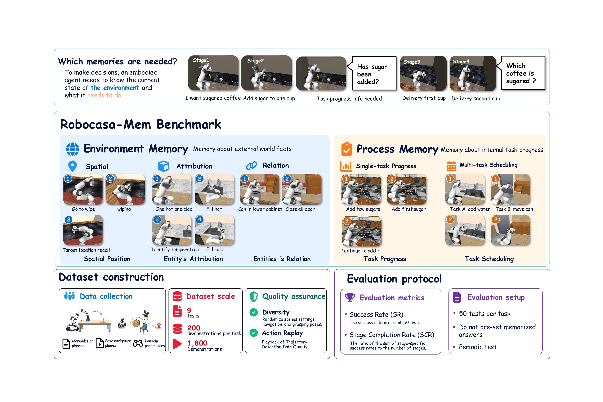
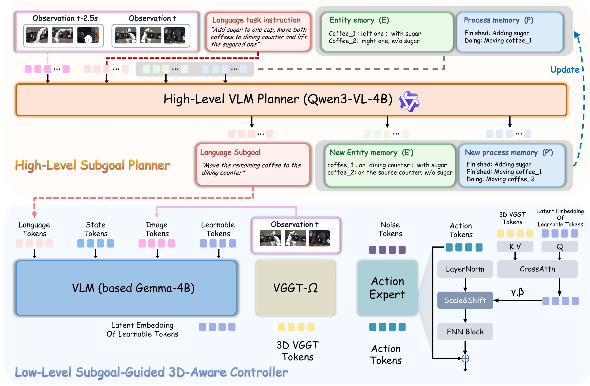
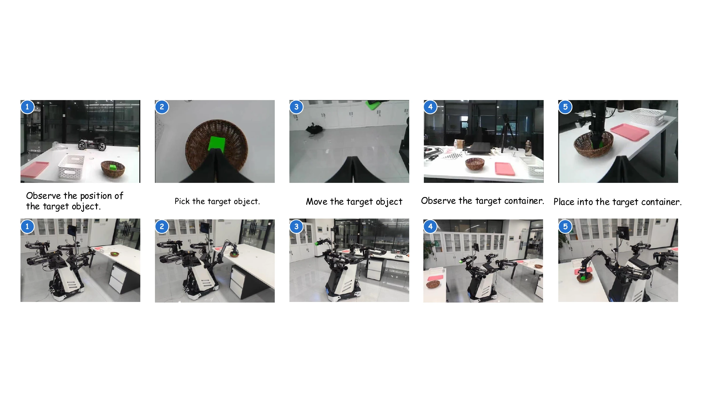

PutBackCup
Spatial · Location recall
Observe the cup’s original spot, move it aside to clean, then return it to the previously cleaned location.
Spatial · Location recall
Observe the cup’s original spot, move it aside to clean, then return it to the previously cleaned location.
Attribute · Hidden attribute
Prepare one sweetened and one unsweetened coffee, then select the sweetened cup after the sugar is no longer visible.
Attribute · Attribute recall
Recall whether hot or cold water was dispensed, then press the matching button.
Relational · Object–container binding
After closing the cabinets, recall the requested items’ locations, retrieve them, and transport them to the stovetop.
Relational · Source–target binding
Transport milk boxes in two trips, placing each on the plate matching its source tray’s color.
Single-task Progress · Search progress
Count the drawers checked while searching for the red cube, then press the answer button that many times.
Single-task Progress · Action counting
Add the requested number of sugar cubes to the hot chocolate, tracking successful additions before pressing completion.
Multi-task Scheduling · Pending obligation
Inspect drawers while heating a pan, then return to turn off the stove and submit both completed task threads.
Multi-task Scheduling · Pending obligation
Retrieve a can while dispensing water, then return to turn off the faucet and complete both tasks.
PutBackCup: Observe the cup’s original spot, move it aside, clean the area, and return the cup to the remembered spot.
SweetCup: Add sugar to one of two coffee cups, let it dissolve out of sight, and select that same sweetened cup rather than the unsweetened one.
TempReport: Dispense hot or cold water, remember which temperature was dispensed, and press the matching temperature button.
CanRecall: Observe the requested items’ cabinet locations, close the cabinets, retrieve the items from those remembered locations, and transport them to the stovetop.
MilkMatch: Observe each milk box’s source tray color, transport the boxes in two trips, and place each box on the plate matching its source tray.
DrawerSearch: Check drawers while searching for the red cube, count the drawers checked, and press the answer button that many times.
SugarCount: Add the requested number of sugar cubes to the hot chocolate, track successful additions, and press completion after reaching the requested count.
HeatAndInspect: Heat the pan while inspecting the drawers, return to turn off the stove, and submit both completed task threads.
FillAndRetrieve: Dispense water while retrieving the can, return to turn off the faucet, and complete both task threads.

Environment Memory
Task-relevant physical information that cannot be reliably recovered from the current view.
Process Memory
Execution state needed to choose subsequent actions and resume unfinished activities.
Behavior-Conditioned Evaluation
For tasks with multiple valid paths, later semantic constraints derive from earlier actions rather than a fixed target. In SweetCup, either cup may receive sugar; success requires selecting that same cup after the sugar dissolves.
HMAP separates history-dependent symbolic planning from low-level 3D-aware control. The planner supplies an executable subgoal; the controller retrieves current geometric features conditioned on that subgoal.

Qwen3-VL-4B-Instruct updates sparse Entity Memory and Process Memory from the instruction, previous memories, and current and earlier observations. It emits only the active language subgoal to the controller.
Built on π0.5, the controller keeps multi-view tokens from frozen VGGT-Ω separate. It uses task-conditioned queries to retrieve relevant geometry through cross-attention; learned scale and shift transformations modulate action-expert layers.
Simulation uses 50 held-out scene seeds per task. Tables report SR and SCR on a 0–1 scale; Avg. is the macro-average over all nine tasks.
HMAP improves average SR from 16.2% to 24.2% and Avg SCR from 0.41 to 0.47, with gains concentrated in hidden-attribute recall.
| Model | PutBackCup | SweetCup | TempReport | CanRecall | MilkMatch | |||||
|---|---|---|---|---|---|---|---|---|---|---|
| SR | SCR | SR | SCR | SR | SCR | SR | SCR | SR | SCR | |
| ACT | 0.00 | 0.48 | 0.00 | 0.07 | 0.00 | 0.09 | 0.00 | 0.09 | 0.00 | 0.03 |
| DP | 0.00 | 0.20 | 0.00 | 0.04 | 0.08 | 0.21 | 0.00 | 0.05 | 0.00 | 0.05 |
| π0.5 | 0.68 | 0.85 | 0.04 | 0.27 | 0.22 | 0.57 | 0.00 | 0.24 | 0.12 | 0.47 |
| MemER-style | 0.10 | 0.22 | 0.00 | 0.21 | 0.00 | 0.58 | 0.00 | 0.21 | 0.00 | 0.19 |
| HMAP (Ours) | 0.70 | 0.79 | 0.10 | 0.46 | 0.86 | 0.93 | 0.00 | 0.26 | 0.16 | 0.47 |
| Model | DrawerSearch | SugarCount | HeatAndInspect | FillAndRetrieve | Avg. | |||||
|---|---|---|---|---|---|---|---|---|---|---|
| SR | SCR | SR | SCR | SR | SCR | SR | SCR | SR | SCR | |
| ACT | 0.00 | 0.08 | 0.04 | 0.07 | 0.00 | 0.25 | 0.00 | 0.26 | 0.00 | 0.16 |
| DP | 0.00 | 0.08 | 0.14 | 0.19 | 0.00 | 0.23 | 0.00 | 0.18 | 0.02 | 0.14 |
| π0.5 | 0.12 | 0.32 | 0.28 | 0.23 | 0.00 | 0.32 | 0.00 | 0.39 | 0.16 | 0.41 |
| MemER-style | 0.00 | 0.25 | 0.08 | 0.10 | 0.00 | 0.32 | 0.00 | 0.20 | 0.02 | 0.25 |
| HMAP (Ours) | 0.08 | 0.31 | 0.28 | 0.20 | 0.00 | 0.50 | 0.00 | 0.34 | 0.24 | 0.47 |
The clearest gain is on TempReport, where SR rises from 0.22 to 0.86. Conditional temperature-recall success rises from 0.41 to 0.90; SweetCup conditional recall rises from 0.22 to 0.45. This supports a targeted benefit for retrieving earlier environment states, not a uniform improvement across manipulation.
HMAP and π0.5 perform similarly on Single-Task Progress. On HeatAndInspect, HMAP improves SCR from 0.32 to 0.50 but not final success; FillAndRetrieve also remains unsolved. Across the evaluated policies, no method completes either multi-task scheduling task.
SCR localizes progress but does not fully separate memory errors from execution errors. Evaluation is primarily in simulation, the taxonomy is not exhaustive, and demonstrations contain only successful expert trajectories.
The robot picks from a colored source container, turns toward the opposite workspace, and selects the matching target after the source leaves the camera view.

@misc{robocasa_mem,
author = {Chen, Sihang and Ye, Chen and Chen, Wei and Lei, Xiaohan and
Tang, Zhipeng and Zhang, Sha and Zhang, Yuan and Chen, Zixuan and
Deng, Jiajun and Li, Houqiang and Zhang, Yanyong},
title = {RoboCasa-Mem: Benchmarking Environment and Process Memory in Long-Horizon Mobile Manipulation}
}